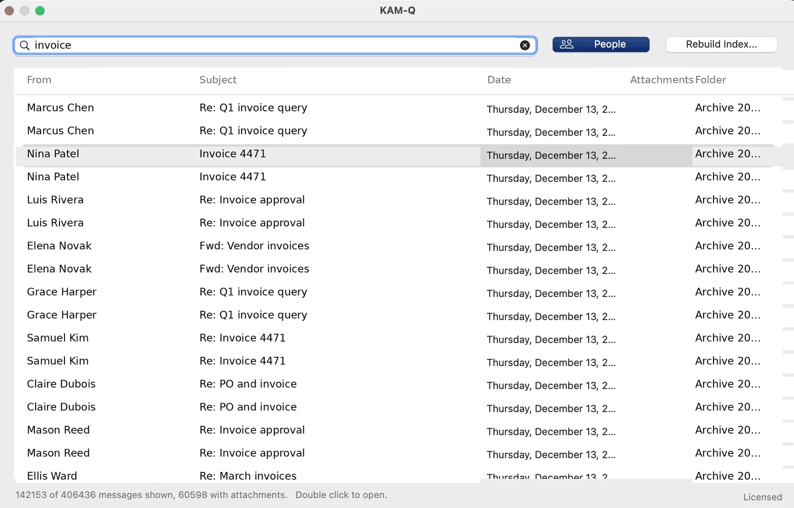
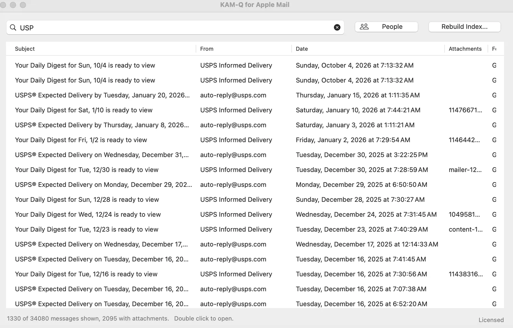

Private email search · Windows, Mac and browser
Find the email. Get back to work.
Search your mail by who sent it, what it was about, or the name of the file attached, and have the answer before you have finished typing.
No credit card. 30 day refund. Classic Outlook on Windows and Mac, Apple Mail, or any Microsoft 365, Outlook.com or Gmail account in your browser.
It runs right here, in this browser. Sign in to Microsoft 365, Outlook.com or Gmail and search your own mail, with nothing to install. No credit card, 30 day refund. The Windows and Mac apps are separate and install on a computer: see those.

- 7 days freeNo card to start
- PrivateYour mail stays on your device
- Four installationsOne license covers them all
- 30 day refundAny reason
Your inbox has the answer. Finding it should not be the hard part.
You know it exists
You remember the message. You remember roughly when. Outlook returns three hundred results and none of them is the one.
You remember the person, not the subject
You know who sent it. That is the one thing mailbox search is worst at using.
You need the file, not the email
Someone sent it. You have no idea which thread it arrived in, and the file name is half remembered.
Know what you need. Find it in a few keystrokes.
This runs here on the page, on made up mail. It cannot see your mailbox and there is nothing to sign in to.
Sample data, invented for this page. The real thing searches your own mailbox and keeps its index on your device.
That is the sample. To do it on your own mail, start the free trial, or open KAM-Q in your browser and sign in to your own account.
The right information, right when you need it
Three things mailbox search does badly, done properly.
01
Stop scrolling through results
Type any part of a subject, a name, an address, a folder or an attachment name, in any order. Results filter as fast as you type. Combine terms with AND, OR and NOT when you need to be exact.
02
Find it by who sent it
People ranks everyone who writes to you, shows when each person usually writes and how often, and when you last heard from them. Automated senders are filtered out. It is the view that answers "it was from Dana, sometime in the spring".

03
Get the file without finding the email first
One list of every attachment a person has sent you, newest first. Search that list by file name or by the subject it arrived with, then open the file, or open the email it came in.
KAM-Q finds attachments by their file name and by the message they arrived with. It does not read the text inside the file.

See the difference
A minute, start to finish. Search, the People view, and opening a file someone sent. Watch for how fast results appear, how People ranks senders, and how a file opens without hunting for its email first.
The browser version is the full product, not a recording. It signs in to your own Microsoft 365, Outlook.com or Gmail account and works on a phone.
How it works
Three steps, and most of it happens in the background.
- Download and connectInstall the app and pick the folders you want to search. Your Inbox and its subfolders are chosen for you. In the browser there is nothing to install: you sign in and go.
- Let it indexKAM-Q reads your newest mail first, in batches, so you can search within minutes while older mail keeps loading.
- Search and exploreFind messages, open the People view, and pull up the files a person has sent, searching that list by name or subject.
Your inbox is private. Your search should be too.
This is the part worth reading properly, because it is the thing most search tools get wrong.
- The index stays on your device. On Windows and Mac, KAM-Q reads your mail through Outlook or Apple Mail on your own computer and keeps its index in your own user folder. In the browser it is kept in your browser.
- No KAM-Q server receives your mail. The browser version talks straight from your browser to Microsoft or Google. Your mail does not pass through us.
- Read-only for Outlook. The Outlook versions only read. They never send, move or delete a message. That is a fixed boundary, not a setting.
- Sign-in happens on Microsoft's and Google's own pages. KAM-Q never sees your password.
- Gmail Cleanup is optional and careful. It moves a sender's old mail to Trash, only when you ask, with an Undo button. It is off unless you turn it on.
- Signed software. The Windows installer is signed by PRB Interactive Inc. The Mac apps are signed and notarized by Apple.
To be precise about what this does not claim: the apps do make network connections, for license checks and update checks. They do not send your mail or your searches. The privacy policy sets out exactly what goes where.
Works where you do
One license, three ways to use it. Pick the one that matches the device you are holding.
Windows
Windows 10 or 11, classic Outlook
Installs without administrator rights. Digitally signed by PRB Interactive Inc.
Mac
macOS, classic Outlook for Mac or Apple Mail
Two apps, one license. The Apple Mail version covers every account set up in Mail, including Gmail, iCloud, Yahoo and AOL.
Browser
Phone, tablet or computer
Sign in to Microsoft 365, Outlook.com or Gmail and search your real mail. Nothing to install. Add it to your home screen and it opens like an app.
Before you download. The Windows and Mac apps work with classic Outlook, not the new Outlook. If you are on the new Outlook, use the browser version, which works with any Microsoft 365 or Outlook.com account. Full requirements.
How it compares
The short version. The long version, including where the others are better, is on Why KAM-Q.
| KAM-Q | X1 Search | Lookeen | |
|---|---|---|---|
| Price a year | $24.99 first year, then $19.99 | $79 | $108 to $300 |
| Installations per license | Four | Not stated on their pricing page | Not stated on their pricing page |
| Mac | Yes, Outlook and Apple Mail | No | No |
| Browser and phone | Yes | No | No |
| Ranked view of who emails you | Yes | No | No |
| Search still works after you stop paying | Yes, on mail already indexed | No | No |
Where these numbers come from. X1's $79 was read from x1.com's own purchase options page on 7 November 2026; that page sells a one year term at $79 and three years at $189, and does not say how many machines a license covers. Lookeen's range was last checked on 17 October 2026 and we have not been able to reach their pricing page since, so treat it as a guide rather than a current quote. Prices change; check both before you decide. Where they are better: X1 and Lookeen read the text inside documents, which KAM-Q does not, and both run as a panel inside Outlook rather than in their own window. The full comparison.
Professional search. Simple pricing.
$24.99$39.99Save $15
for your first year, then $19.99 a year
Use code FIRSTYEAR at checkout. Cancel any time. Offer ends December 31, 2026.
- 7 day free trial, no card
- One license, four installations
- Windows, Mac and browser
- Updates included while active
- 30 day money back guarantee
Ready now? Buy KAM-Q with the offer applied.
What happens if you stop paying
KAM-Q stays yours. Stop renewing and you can still open it and search everything it has already indexed, for as long as you like. What the subscription pays for is keeping the index up to date with new mail, and new versions as they come.
Buying for a team
Team pricing starts at two people: $21 per person per year for 2 to 19, $18 for 20 to 59, and a conversation above that. One key for everyone, one invoice, purchase orders accepted, no setup fee.
Questions
Does KAM-Q send my mail anywhere?
No. The Windows and Mac versions keep their index on your own computer. The browser version connects your browser straight to Microsoft or Google. We run no server that sees your mail. Full detail in the privacy policy.
Which Outlook does it work with?
The desktop apps need classic Outlook, on Windows or Mac. The new Outlook is not supported. The browser version works with any Microsoft 365, Outlook.com or Gmail account, whichever Outlook you use.
Does it change or delete my email?
The Outlook versions only read. In Gmail, the optional Cleanup feature moves a sender's old mail to Trash when you ask, with an Undo button. KAM-Q never deletes anything permanently.
I have a very large mailbox. Is that a problem?
No. KAM-Q reads mail newest first and in batches, so you can search within minutes while it works. A 400,000 message mailbox is a normal size for it. You can also choose which folders to include.
What happens if I cancel?
Everything already indexed stays searchable, for as long as you like. New mail stops being added to the index, and you stop getting new versions. Refunds within 30 days, any reason.
Can I buy KAM-Q for my team?
Yes, from two people up. $21 per person per year for 2 to 19, $18 for 20 to 59, and a conversation above that. One key, one invoice, purchase orders accepted, no setup fee. Team pricing.
More answers on the support page.
Made by one person, in New York
KAM-Q is built by Paul Berkson at PRB Interactive Inc., a Delaware corporation based in New York. It started because a 400,000 message mailbox made Outlook search useless and nothing on the market fixed it at a sensible price. If something is wrong, write to support@kam-q.com and you will hear back from him rather than from a queue.
Stop looking for emails.
Seven days free, no card. It takes about a minute to know whether it is for you.
On your phone? Send the download link to your computer.
One email with the Windows and Mac download links and the compatibility note. Nothing else, and you are not added to any list.